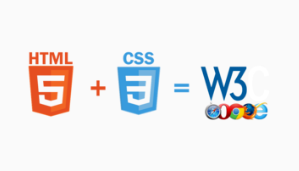

W3C: Stands for World Wide Web Consortium was created by the inventor of the web, Tim Berners-Lee. W3C plays a significant role in the development and expansion of web. W3C main goal is to ensure that World Wide Web is accessible to people of all ages. To make sure the web technologies are compatible to all the web-browsers. W3C lays a set of protocol and guidelines for the developers to match the standards and compatibly with the current browser version. This helps developers save lot of time and money.
HTML: Stands for Hyper Text Markup Language which is used for creating webpages and web applications. It is used to design the structure of webpage. eg.skeletons in human body are mapped as html as they are pillars of human body.
CSS: Stands for Cascading Style Sheet used to style the webpage to bring a better outlook to the webpage. CSS can be embedded within HTML to make layout superior or presentable. eg.Muscles aka flesh in human body are mapped as CSS and they are layered on top of skeleton.
Image Source: https://www.natashajacobs.net/blog/2018/8/7/html-css-w3c
W3C plays a key role in validating the website to ensure it’s compatible with the different web-browsers. Web-page design and application process involve certain standards to build and change web-pages which include HTML, Ajax, CSS, etc.., for building web applications. W3C ensures that people with disabilities also have access to World Wide Web and browser compatibles work well on mobile devices, iPad, etc.…Users use different web-browsers for example some use Chrome or IE or Mozilla Firefox, and so on. W3C advices the developers with regards to what technical languages to include in-order to develop the site and make sure that web-page is compatible on all the browsers present out there. So every user has access to the websites on any available platform out there.
Image Source: https://churchm.ag/how-the-internet-works/